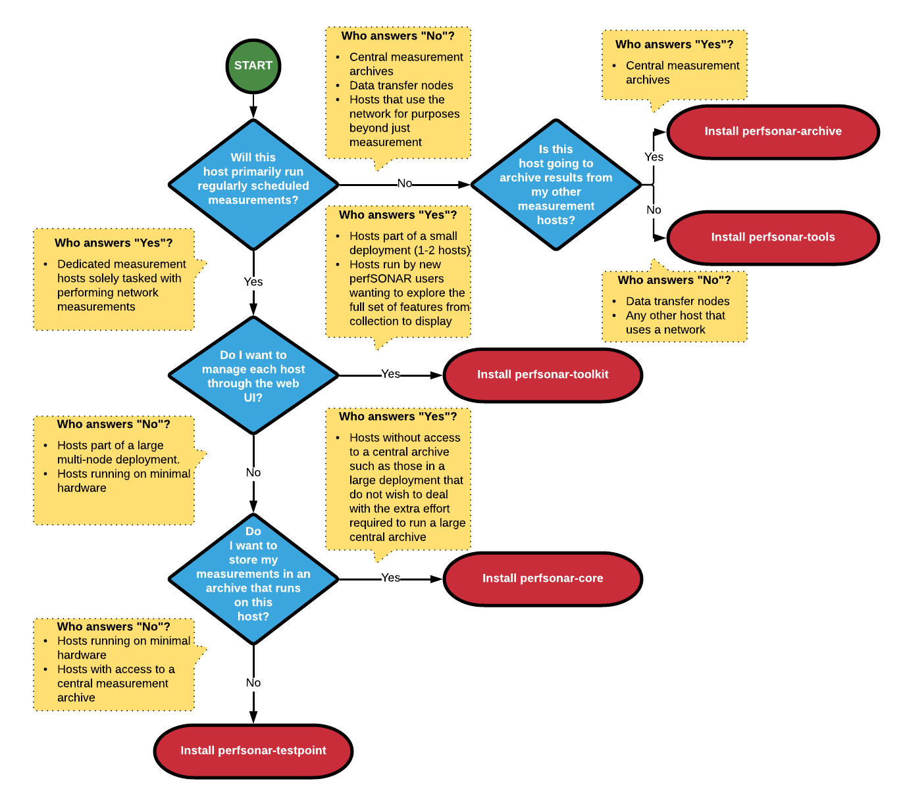

perfSONAR has number of installation “bundles” depending on your needs and the set of tools you plan to use. Each bundle is available as operating system packages and in some cases Docker containers. The current set of available bundles are as follows:
perfSONAR Tools This bundle includes just the command-line clients needed to run on-demand measurements such as iperf, iperf3 and owamp. This bundle is generally best for hosts that aren’t dedicated measurement nodes but want the command-line utilities available for troubleshooting as the need arises.
- Automatically run tests on a regular schedule
- Participate in a centrally managed set of tests
- Publish the existence of a measurement node
This bundle does NOT contain the software required to store measurements locally in an archive; the archive must be remote. This is best for dedicated testers running on lightweight hardware platforms that have a remote location in which to publish results.
perfSONAR Archive: This host does not run measurements, but stores the measurements from one or more other hosts. It is a common pattern to install Testpoints on multiple hosts and have them all write to a central host running the Archive package.
perfSONAR Core: This bundle install includes everything in the Testpoint and Archive bundles. This is ideal for dedicated measurement hosts that want to store results locally, but do not want a perfSONAR Toolkit install. In other words, they do not want to use a web interface and want the flexibility to choose default security and tuning settings.
A visual description of the bundles can be found below:

This flowchart below was created to help pick the best option for your use case:
